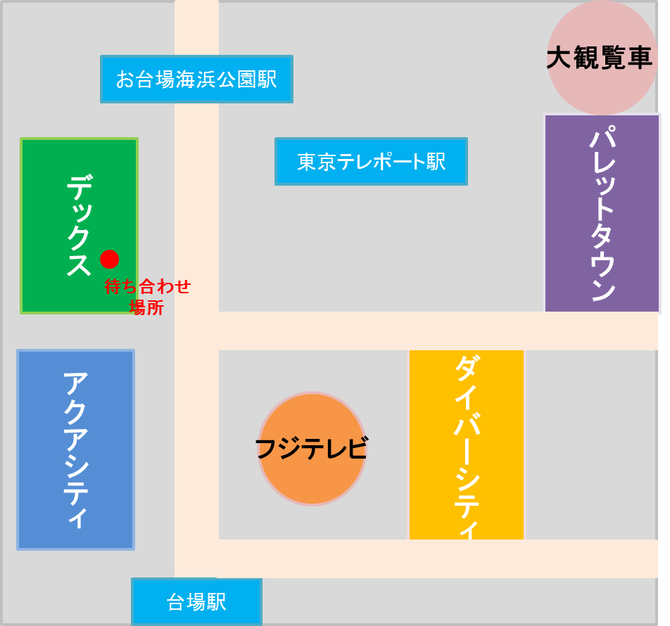

プチ観光のお台場デートについて紹介します。待ち合わせ場所については、記載の通りでお願いします。
実際のデートプランに関しては、参考程度でお相手の方と相談の上、進めていただければと思います。
お台場デートは、プチ観光なので、普通のデートよりも少し長めな2時間程度は見込んで頂けますと幸いです。
お台場MAP

待ち合わせ場所は、デックス内にある東京ジョイポリスになります。(図の赤い点)
※詳細なジョイポリスの場所は、アクセスからご覧ください。
①『デックス東京ビーチ』の『SEASIDE MALL』から入って、
②『JOYPOLIS』前を通過し、
②右手にある『消火栓』前が待ち合わせ場所になります。
※時間厳守でお願いします。
①ジョイポリスでアトラクションを楽しむ。
【ジョイポリス前】
②ジョイポリスの1階上の4階にある、台場一丁目商店街を物色。
②もしくは、フジテレビに行き、ワンダーストリートやフジテレビショップを見る。
③パレットタウン大観覧車に乗り、解散！
お台場デートに関して、もう少し詳細に知りたい場合には、こちらの記事
「お台場でおすすめのデートプランとは？夜景・アトラクション・ショッピングと見どころ満載！」も参考にしてみてください。
※ロボットの「地平ジュンこ」さんです。お台場にいるので、探してみてください！
ご不明点は、info@symply.jpまでお願いします。